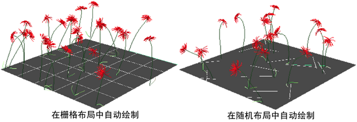

您可以使用笔划快速填充曲面，而无需逐个绘制笔划或复制并粘贴笔划。有两种方法可以执行该操作：
- 在曲面上以栅格布局自动绘制多个笔划。
- 在曲面上以随机布局自动绘制多个笔划。
注： 如果已使用 paintGrid 和 paintRandom MEL 脚本自动绘制多个笔划，那么在 Maya 中使用“栅格绘制”(Paint Grid)和“随机绘制”(Paint Random)命令之前删除这些脚本。
在曲面上以栅格布局自动绘制多个笔划
- 选择进行绘制要使用的笔刷。
- 选择要在其上自动绘制笔划的 NURBS 曲面或多边形曲面。
- 选择“生成 > 自动绘制 > 栅格绘制”(Generate > Auto Paint > Paint Grid) >
 。有关信息，请参见栅格绘制选项。
。有关信息，请参见栅格绘制选项。
- 设置相应的选项，然后单击“绘制笔划”(Paint Strokes)。
在曲面上随机地自动绘制多个笔划
- 选择进行绘制要使用的笔刷。
- 选择要在其上自动绘制笔划的 NURBS 曲面或多边形曲面。
- 选择“生成 > 自动绘制 > 随机绘制”(Generate > Auto Paint > Paint Random) > 。有关信息，请参见随机绘制选项。
- 设置相应的选项，然后单击“绘制笔划”(Paint Strokes)。